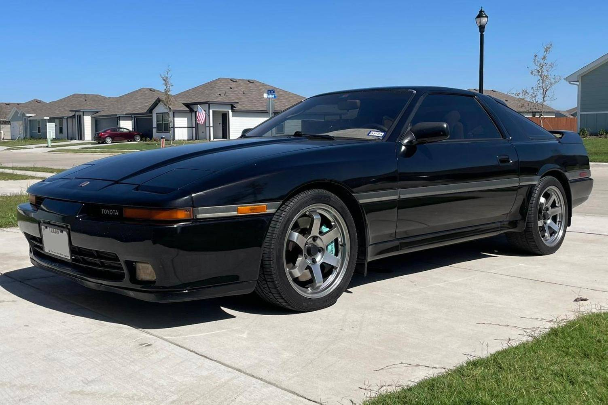

×
Kezdőlap
Autók
Motorok
Elérhetőségek
Szerződési feltételek
☰
Kawasaki GPZ 900 R
Kilóméter óra:
47 500km
Üzemanyag: benzin
Teljesítmény: 85kW (116 LE)
Első forgalomba helyezés: 08/1984
ára: 2 600€
Vásárlás
Piaggio 1 Active
Kilóméter óra:
000km
Üzemanyag: benzin
Teljesítmény: 3kW (4 LE)
Első forgalomba helyezés: ---
ára: 1 000€
Vásárlás
BMW S 1000 RR
Kilóméter óra:
13 003km
Üzemanyag: benzin
Teljesítmény: 152kW (207 LE)
Első forgalomba helyezés: 03/2020
ára: 19 989€
Vásárlás
Ducati Cucciolo
Kilóméter óra:
2 000km
Üzemanyag: benzin
Teljesítmény: 2kW (3 LE)
Első forgalomba helyezés: 02/1950
ára: 3 956 000€
Vásárlás
Opressor Mk II
Kilóméter óra:
1 628 192km
Üzemanyag: kerozin
Teljesítmény: 1 500kW (2 011 LE)
Első forgalomba helyezés: 12/2034
ára: 8 000 000€
Vásárlás
Nissan Skyline VSpec 2 GTR R32
Kilóméter óra:
103 000km
Üzemanyag: benzin
Teljesítmény: 205kW (279 LE)
Első forgalomba helyezés: 03/1994
ára: 210 000€
Vásárlás
Porsche 911
Kilóméter óra:
41 800km
Üzemanyag: benzin
Teljesítmény: 160kW (218 LE)
Első forgalomba helyezés: 08/1989
ára: 220 000€
Vásárlás

Supra 3.0 Turbo GT MK3 A70
Kilóméter óra:
292 800km
Üzemanyag: benzin
Teljesítmény: 172kW (234 LE)
Első forgalomba helyezés: 08/1989
ára: 14 900€
Vásárlás
Toyota Corolla GT AE86
Kilóméter óra:
100 800km
Üzemanyag: benzin
Teljesítmény: 91kW (124 LE)
Első forgalomba helyezés: 05/1986
ára: 36 000€
Vásárlás
↑